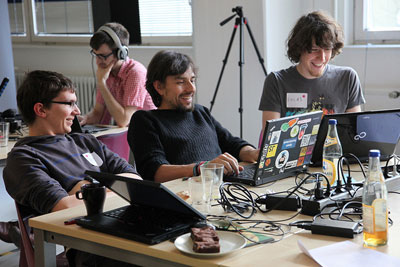
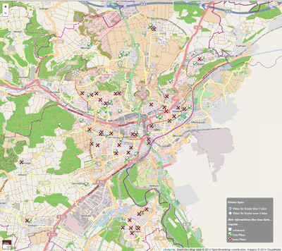

Code for Germany
“I want to work in public service to make the world a little bit more transparent, to encourage citizens to work together with government, and to get citizens more involved in democratic processes and our daily life.”
Building and Enabling the Civic Technology Community in Germany
In the spirit of furthering transparency and openness, pillars central to the organization’s work, the Open Knowledge Foundation’s Berlin chapter started a Code for Germany program. The Code for Germany team began with plans to implement a Code for America-inspired fellowship program but the German government’s inflexible procurement policies made it difficult for cities to pay for fellows.
Instead, Code for Germany created a national network of citizen volunteer chapters who work with their local governments to leverage technology to improve the places where they live. All of these chapters are closely associated with Code for America’s Brigade program. The Code for Germany team trained and activated a national network of people committed to community organizing and to working with their local governments to use technology as the vehicle for positive social change throughout the country.
There are now thirteen Open Knowledge “Labs” working on projects throughout Germany and the program has inspired more demand for labs than the Code for Germany team can support.
Code for Germany’s Open Knowledge Labs work closely with their government partners to:
Strengthen the democratic process in Münster by developing a digital interface to the city council that provides an overview of current legislation and city council activity.
Democratize the way public land is developed in Berlin by creating 3d visualizations that help residents better understand the implications of urban development projects and equip them to influence the process in an informed and effective manner.

Inform residents in Ulm of free childcare options near them using a digital nursery school-finder.
